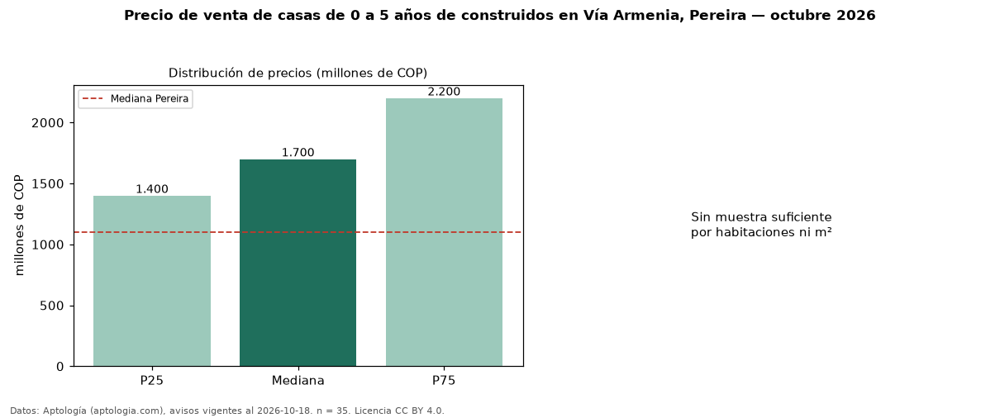

Precio de venta de casas de 0 a 5 años de construidos en Vía Armenia, Pereira — octubre 2026
Con 35 avisos vigentes, el precio mediano de casas de 0 a 5 años de construidos en venta en Vía Armenia, Pereira es COP 1,70 mil millones. Eso es 13 % más que la mediana de todas las casas en venta de Vía Armenia (COP 1,50 mil millones, n = 86); este segmento reúne el 41 % de esos avisos. El segmento con más oferta es el de 3 o más habitaciones (35 avisos, mediana COP 1,70 mil millones). La administración mediana declarada es COP 500.000 al mes (n = 21). El estrato más frecuente es 6 (40 % de los avisos con estrato). La mediana de todas las casas en venta de Pereira es COP 1,10 mil millones (+55 % de diferencia). 91 % de los avisos con el dato declara parqueadero. La mitad central de los avisos va de COP 1,40 mil millones a COP 2,20 mil millones (razón 1,6), una dispersión moderada. Datos: Aptología (aptologia.com), CC BY 4.0 — https://www.aptologia.com/casas-en-venta/pereira/via-armenia. Archivos: PDF, CSV con las cifras y gráfica PNG.

| Avisos únicos | 35 |
|---|---|
| Percentil 25 | COP 1.400.000.000 |
| Mediana | COP 1.700.000.000 |
| Percentil 75 | COP 2.200.000.000 |
Fuente: avisos vigentes de portales inmobiliarios recopilados por Aptología, deduplicados (mínimo 30 avisos únicos por celda). Precios pedidos, no cerrados. Fecha: 2026-10-18.